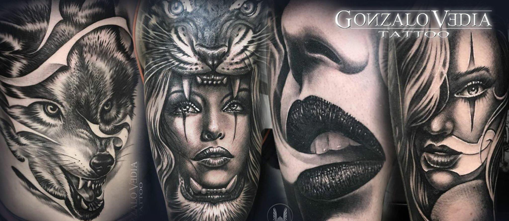
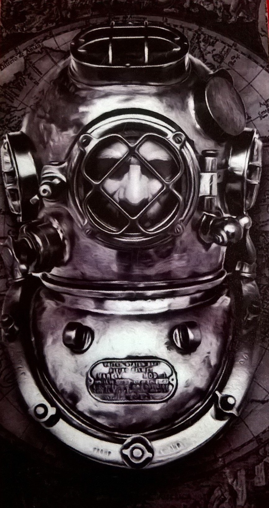
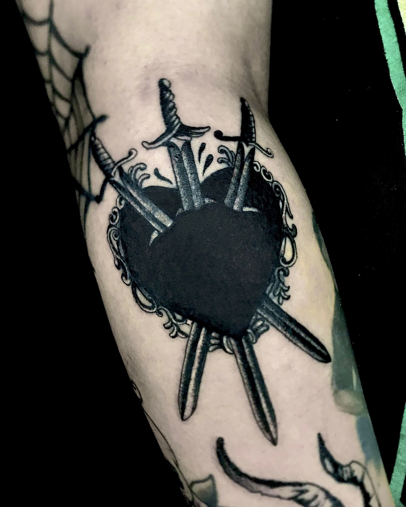
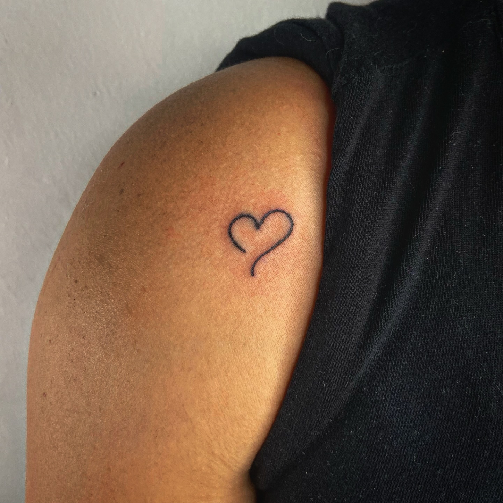

4,98 ★
Rating en Google

Un estudio privado en Falucho 2218, con artistas residentes especializados en black & grey, realismo y covers. Cada pieza se trabaja con turno, de principio a fin.
Piezas con identidad, trabajadas por artistas que se especializan en lo que hacen. Sin apuro y con turno previo, para que cada trabajo tenga el tiempo que merece.
La especialidad de la casa: retratos, fauna y piezas de gran formato en negros y grises, con el nivel de detalle que muestran los trabajos del estudio.
¿Un tatuaje viejo que ya no te representa? Se evalúa tu caso y se diseña una pieza nueva que lo tape con criterio, aprovechando lo que ya tenés.
Perforaciones realizadas en el estudio, con la misma seriedad y cuidado que cada tatuaje.
Trabajos reales de los artistas residentes. En el Instagram del estudio vas a encontrar el portfolio completo, actualizado semana a semana.



Cuatro tatuadores con estilos propios. Mirá el trabajo de cada uno y elegí con quién querés tatuarte.
| Lunes a sábados | 14:00 a 19:00 |
| Domingos | Cerrado |
La atención es con turno previo, así cada pieza tiene su tiempo asignado.
Falucho 2218
Mar del Plata, Buenos Aires
Instagram: @estudio.privado.tattoo
Facebook: Estudio Privado Tattoo
Contanos tu idea, mirá los trabajos de los residentes y reservá tu turno. Te respondemos por mensaje directo.
Reservá tu turno